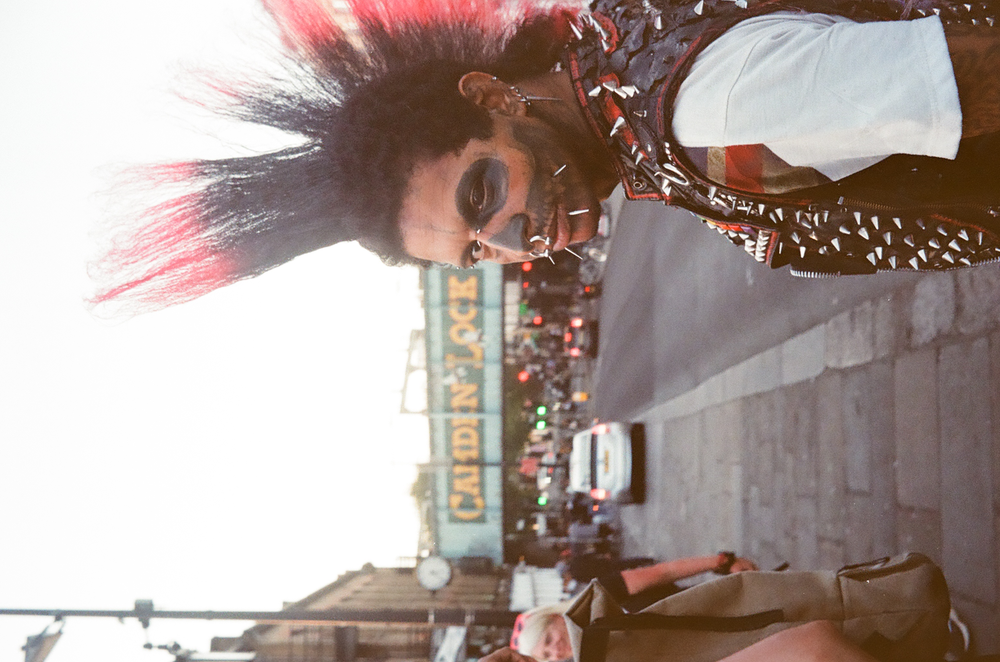
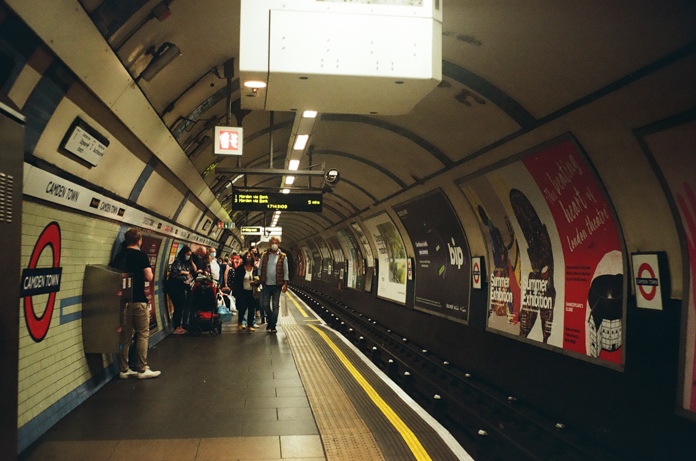
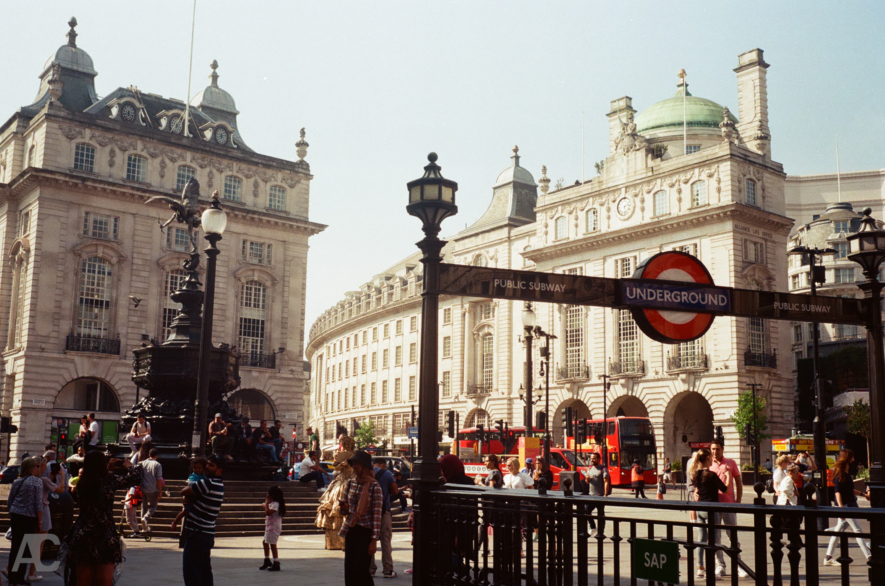
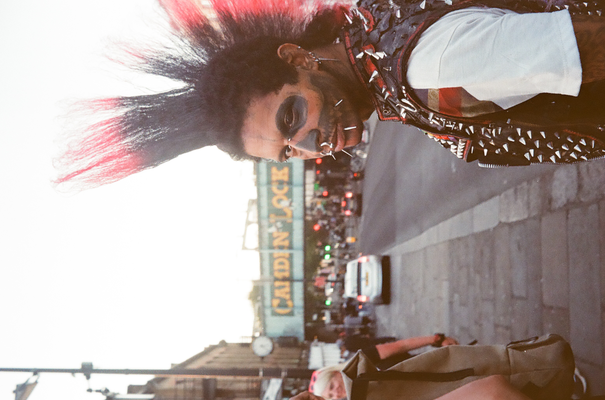
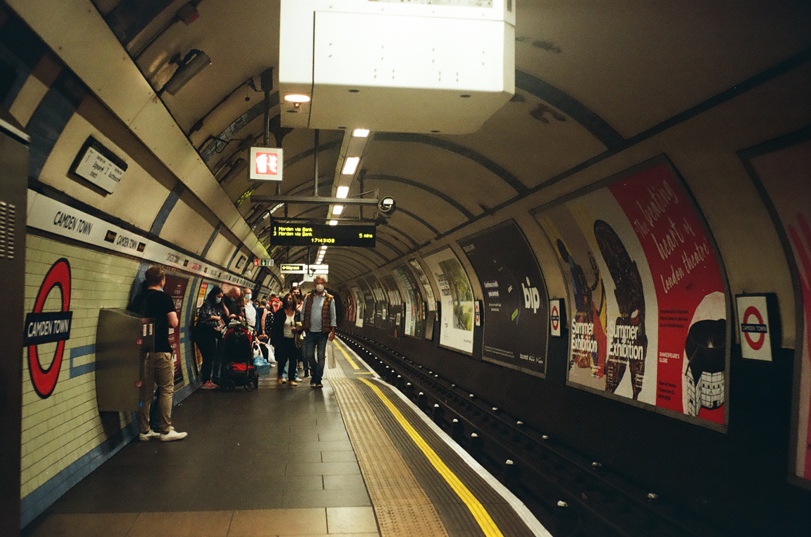
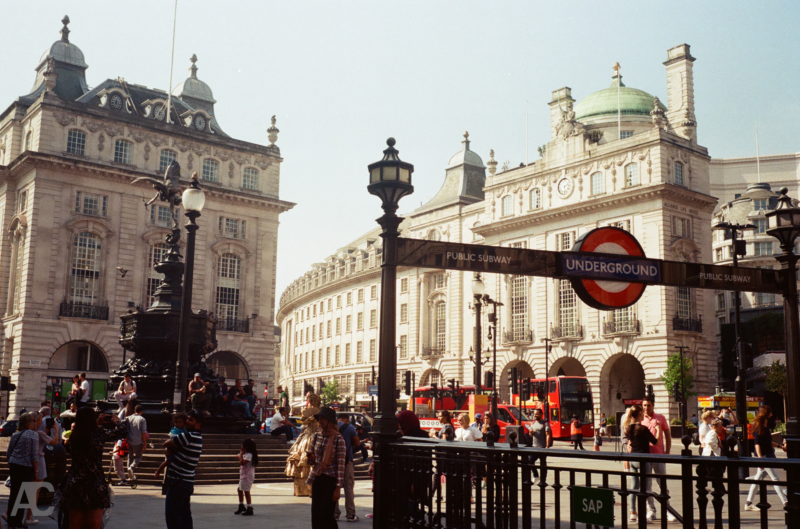
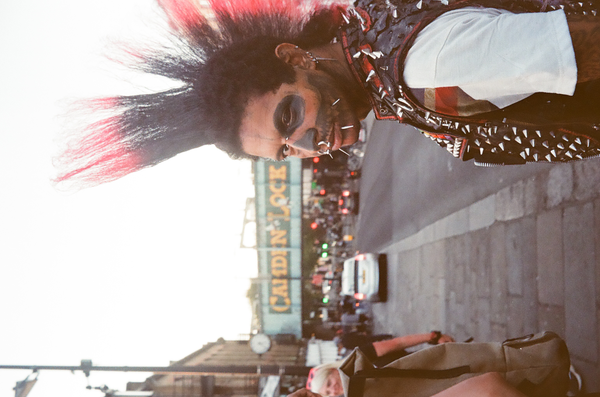
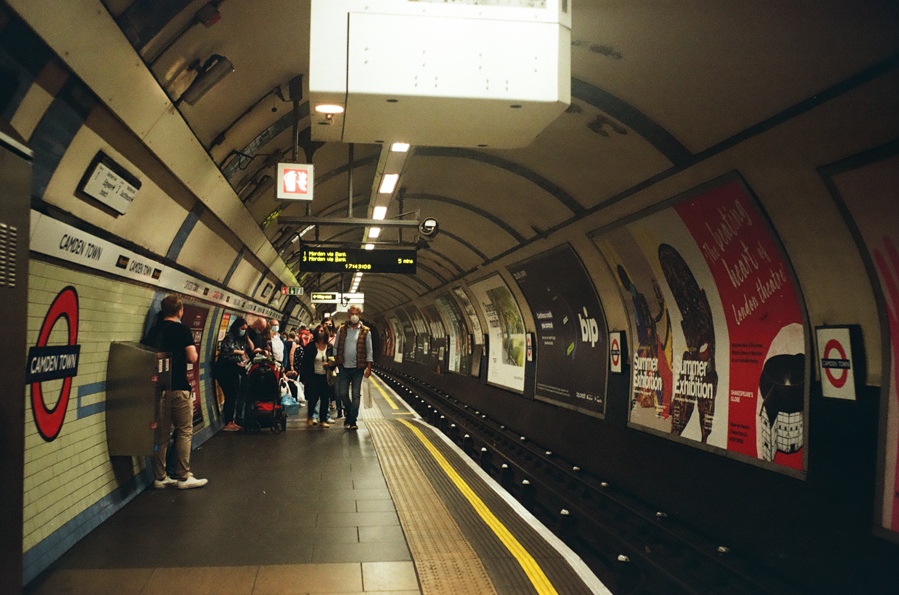
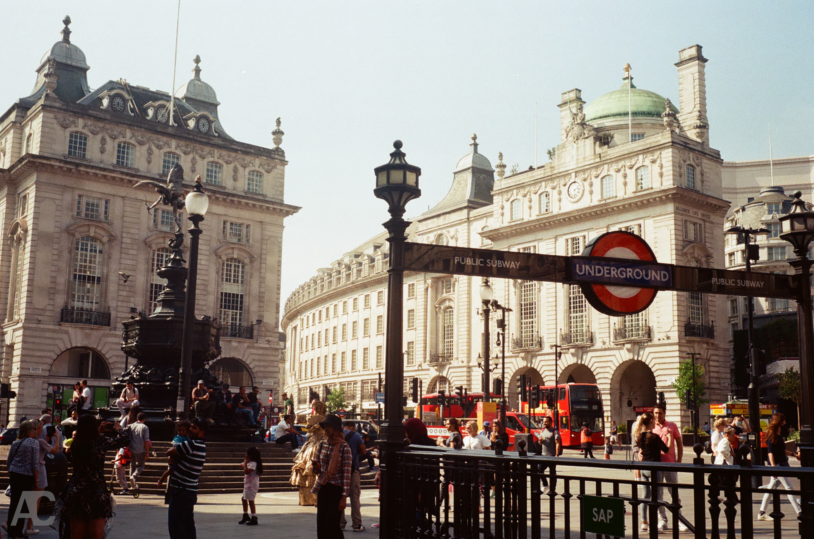

I take pics on film and digital. I love taking photos, but I'm terrible at actually getting them processed and on my drives. Heres a collection of some of my favourites I've managed to get off my cameras.


